This talk shows how GEOG 476 keeps its pieces connected. The course is stored as data, not as pages. Every activity has a Bloom's Level and reaches a degree outcome, nothing is due before it is taught, every class recording is reviewed against the plan, and programs check all of it before anything reaches Canvas. Each slide is below, with its figure. The full deck is also available as a PDF.
What traceability means in GEOG 476
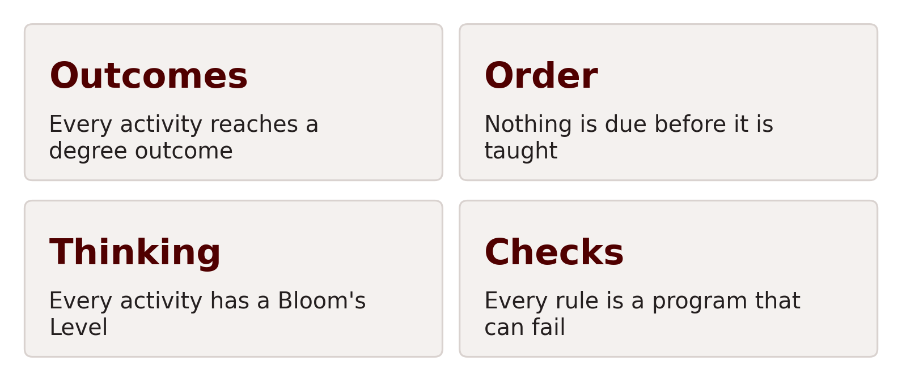
Problems that traceability caught in GEOG 476 this semester
Each one looked correct on its own page.
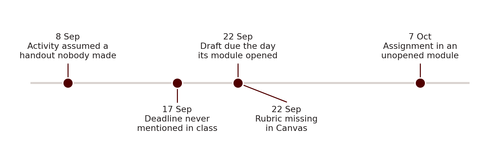
The course is stored as data, not as pages
How the GEOG 476 course files become what students see
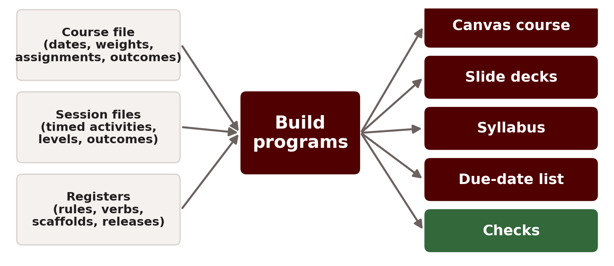
One due date, stored once and printed in five places
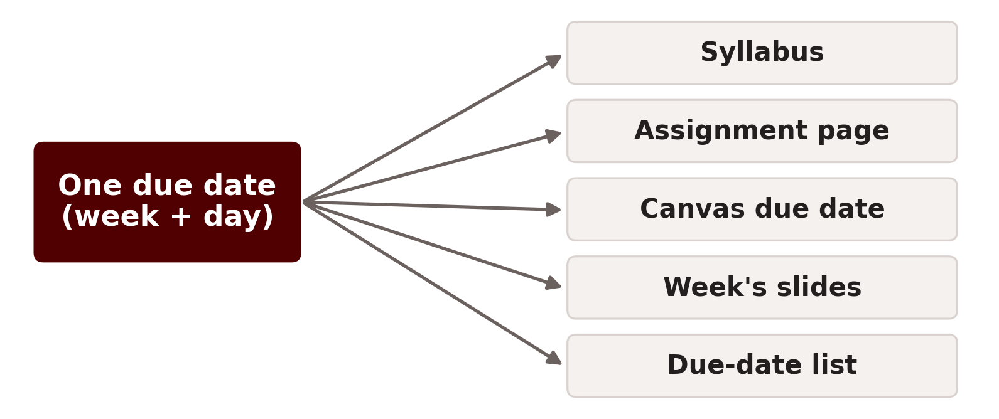
Everything in the course is part of one graph
What is in the GEOG 476 course graph
1,245 items, connected by 1,938 links.
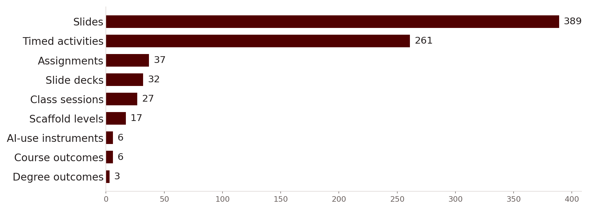
The kinds of links in the GEOG 476 course graph
Gold links say one thing must happen before another.
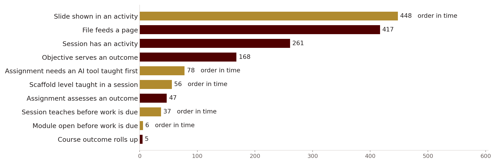
Every activity has a Bloom's Level
The Resumes lecture, as its session file describes it
Each block is a timed activity. The word below it is its Bloom's Level.
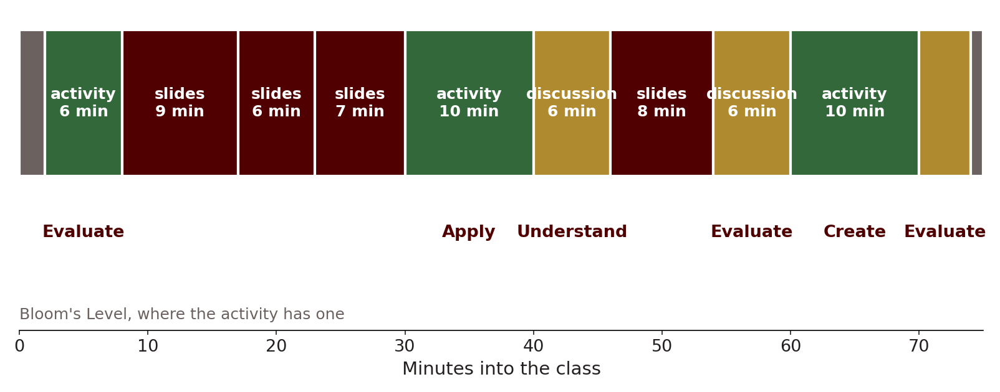
The Resume Draft, followed from its module to a degree outcome
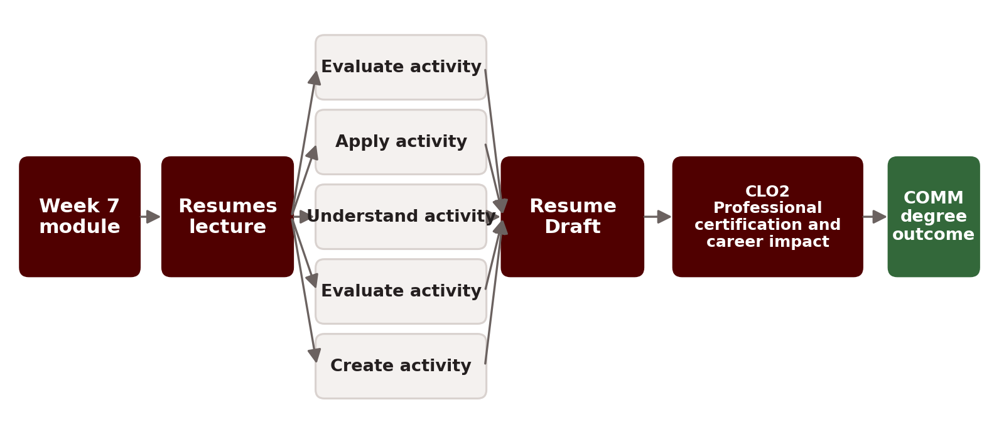
Assigning a Bloom's Level, and where the verbs come from
The Texas A&M list settles 12 of the 39 verbs the published lists disagree on.
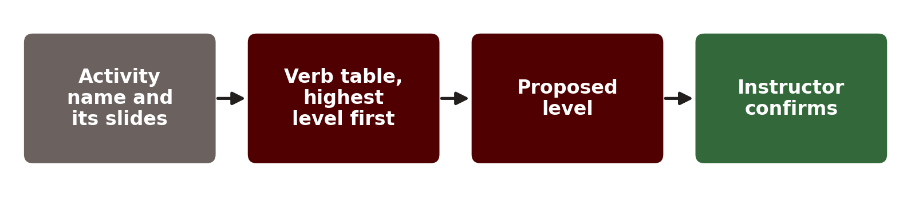
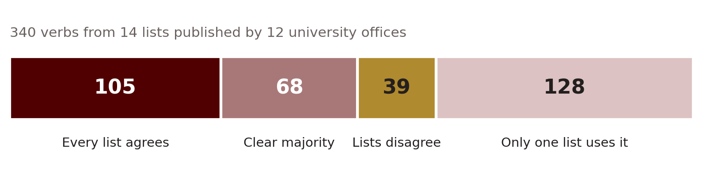
Bloom's Levels of all 183 activities and assignments
2 levels are confirmed by me. 181 are still proposals.
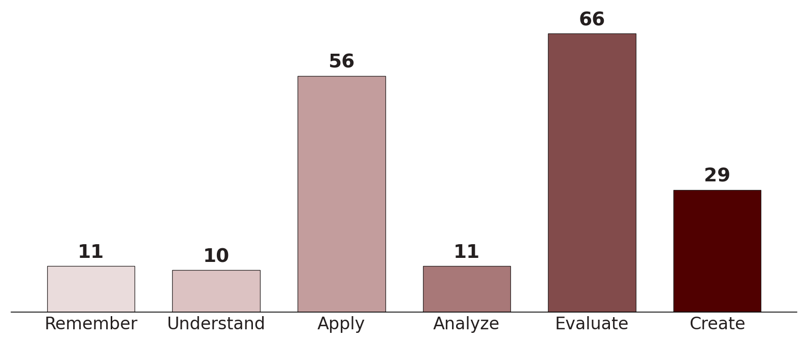
The AI-use scaffold climbs from Remember to Create
A check refuses an AI activity at a level outside its weeks.
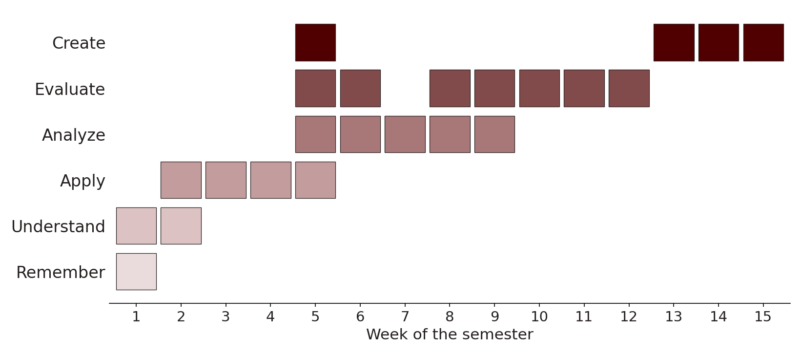
Each class session has to climb in Bloom's Level
The Pilot Analysis studio, week 5. A session that stays at one level is refused.
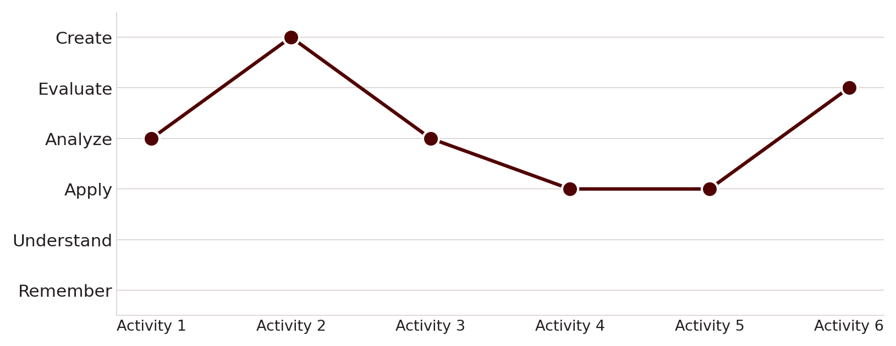
Bloom's Levels of every activity and assignment by week
The whole course does not climb as neatly as the AI-use strand.
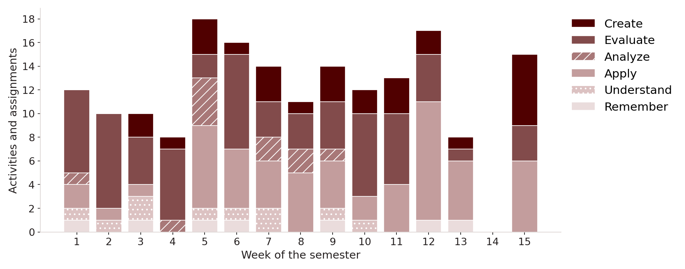
How GEOG 476 activities reach degree outcomes
Line width is the number of activities and assignments on that path.
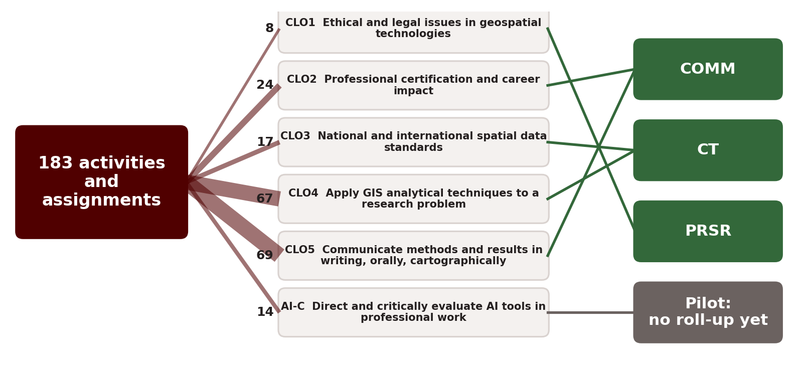
Every class recording is reviewed against the plan
How a GEOG 476 class recording becomes changes to the next class
The recording shows what the plan and the slides cannot.
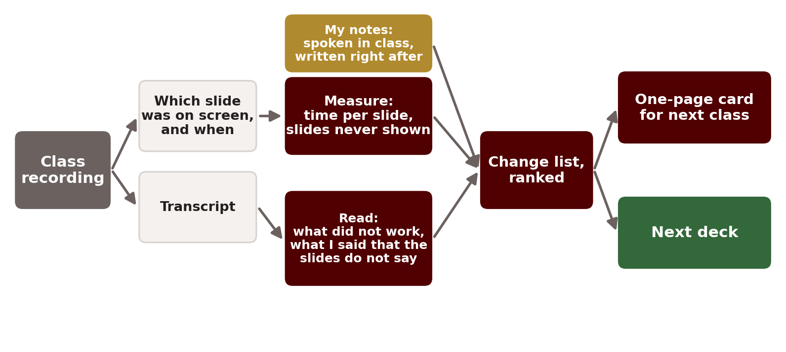
What I said in class that the slides did not carry
Each remark is logged with its time, the slide on screen, and where it should go.
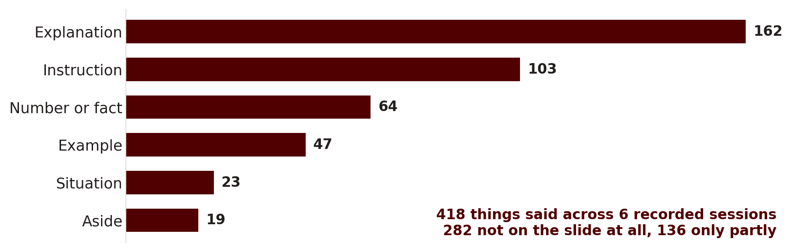
Off-the-cuff examples captured from the recordings
Good examples given once in class are written into the next version of the slides.
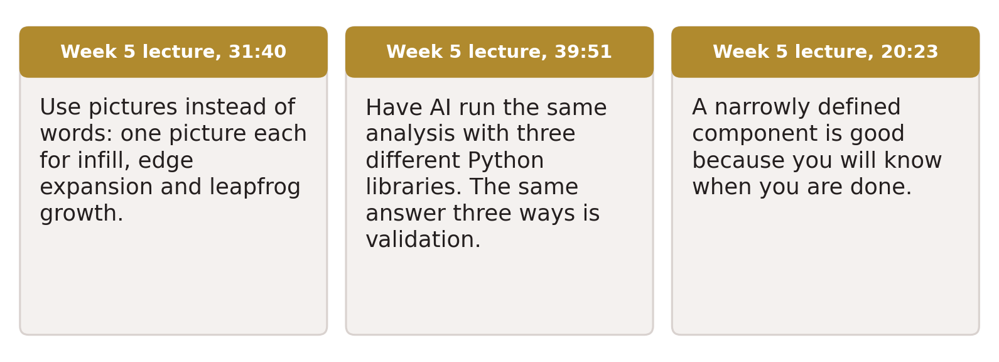
Notes I take while teaching, by saying them aloud
The transcript keeps them. I add written notes in the hour after class.
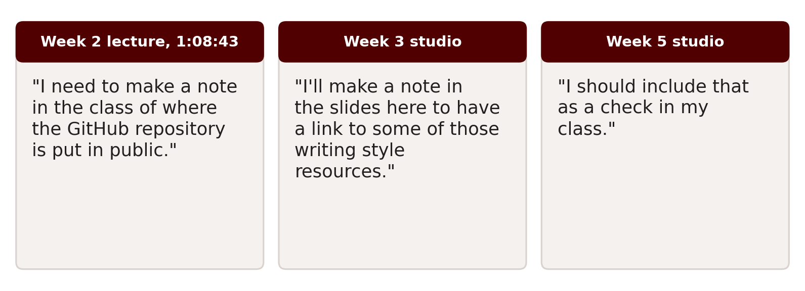
One moment in a recording that became a check
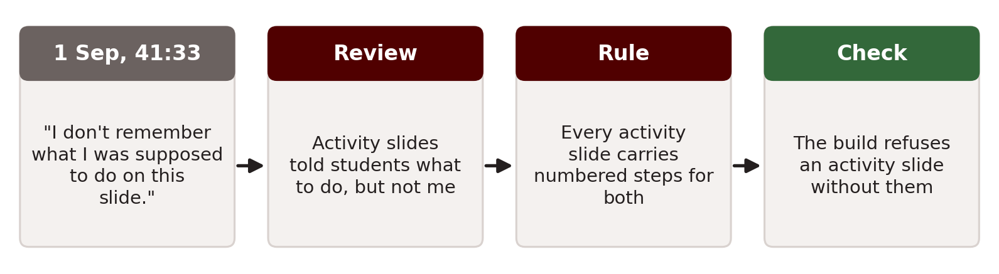
How GEOG 476 is built, checked and released to Canvas
Nothing reaches Canvas until every check passes, and I still open it by hand.
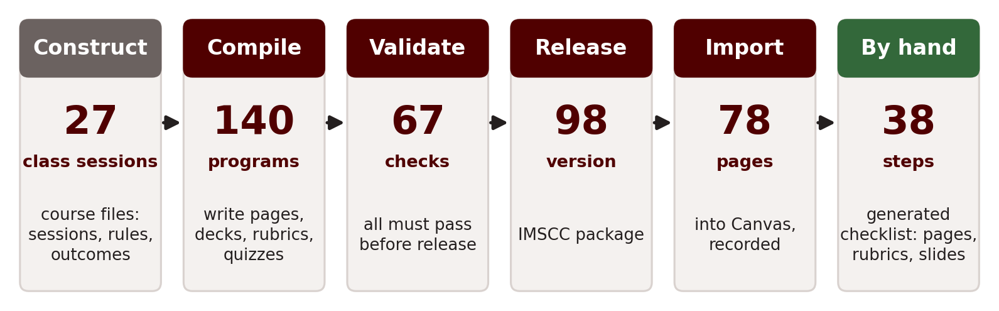